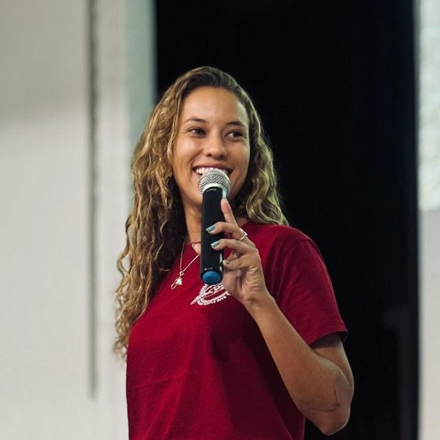

Aiara
Cardoso
Marine scientist. Reef ecology, restoration and citizen science.

- 3,500+dives
- 10+years in the water
- MScZoology, UFPB Brazil
- 5selected publications
What I do
I run field research on tropical reefs where tourism and ecosystems overlap. I build ways for divers, students and local people to contribute data, and I partner with universities and NGOs so the science reaches the people who live beside the reef.
Where I've worked
-
2025to 2026
Marine Research & Education Director
Black Turtle Dive, Koh Tao, Thailand
- Developed conservation programmes linking training, monitoring, research partnerships and public engagement.
- Managed field teams, research partners, data systems, timelines and reporting.
- Trained staff, students and dive professionals, and grew university collaborations.
- Set up MSc placements with the University of Plymouth: I proposed seven field projects, and three students chose to do theirs at Black Turtle Dive.
-
2024to 2025
Lead Scientist
Black Turtle Dive, Koh Tao, Thailand
- Chose and adapted methods for coral restoration and for surveys of sea slugs, sharks, turtles, crown-of-thorns starfish, fish and invertebrates.
- Trained dive professionals in survey methods and opened collaborations with universities.
-
2022to 2023
Marine Project Leader and SCUBA Instructor
We Be Divin' and Beyond the Reef, Tortola, British Virgin Islands
- Set up BVI Whale Wonders, a cetacean survey programme, with researchers from the Caribbean Cetacean Society.
- Our photo-identification matched a humpback whale in BVI waters to an earlier sighting in Norway.
- Supported coral disease treatment, sea turtle rehabilitation, shark research and marine debris work.
- Represented Beyond the Reef at the Humpback Whale World Congress in Santo Domingo, 2023.
-
2020to 2021
Expedition Manager and SCUBA Instructor
Reef Conservation International, Placencia, Belize
- Ran a conservation programme on invasive lionfish control and marine biodiversity.
- Led species-identification dives for international volunteers and coordinated island operations.
-
2019
Expedition Coordinator and SCUBA Instructor
Blue Ventures Expeditions, Sarteneja and Bacalar Chico Marine Reserve, Belize
- Ran a remote dive camp covering fieldwork, safety, training, budget and community conservation.
-
2019to now
Research Collaborator
Laboratory of Applied Ecology and Conservation (LEAC), João Pessoa, Brazil
- Surveyed coral bleaching and disease on three Paraíba reefs during the 2024 global bleaching event.
- Ran underwater surveys with transects and photoquadrats.
- My MSc data was part of the evidence, alongside colleagues' research, for protecting the Naufrágio Queimado area.
-
2011to 2018
Early field work
Brazil
- Field assistant on sea turtle mapping (LEAC) and rocky shore surveys with BRUV and telemetry.
- Dive guide at Mar Aberto Dive Center, 2016 to 2018.
- Sea turtle rehabilitation and nesting monitoring with NGO Guajiru, 2012.
- Science teaching assistant in public schools, 2011 to 2015.
I have also worked as a freelance SCUBA instructor and dive guide in Brazil (Papuan Dive and Tourism, seasonal in 2019 and 2024) and on Andaman Sea liveaboards out of Khao Lak, Thailand (2022).
Published research
- Morais, J., Almeida, P. M., Avelino, C. D., Souza, M. C. A., Cardoso, A. P. L. R., et al. (2026). Risk or relief? The influence of river plumes on coral bleaching and disease in marginal and extreme reefs. Marine Pollution Bulletin, 222, 118741.
- Morais, J., Siqueira, A. C., Rocha, L. A., Medeiros, A. P. M., Cardoso, A. P. L. R., & Santos, B. A. (2026). Diversity and vulnerability of reef fishes in marginal and extreme habitats. In M. O. Soares et al. (Eds.), Extreme and Marginal Coral Reefs and Communities (pp. 33–54). Springer.
- Morais, J., Cardoso, A. P. L. R., & Santos, B. A. (2022). A global synthesis of the current knowledge on the taxonomic and geographic distribution of major coral diseases. Environmental Advances, 8, 100231.
- Medeiros, A. P. M., Ferreira, B. P., Betancur-R, R., Cardoso, A. P. L. R., et al. (2021). Centenary shipwrecks reveal the limits of artificial habitats in protecting regional reef fish diversity. Journal of Applied Ecology.
- Cardoso, A. P. L. R., et al. (2020). Increased fish diversity over day and night in structurally complex habitats of artificial reefs. Journal of Experimental Marine Biology and Ecology, 522, 151244.
Talks and films
- Invited talk, “Restoration and Scientific Diving”, CEPENE, Tamandaré, Brazil, 16 December 2025. Part of the course “Ecologia e Evolução de Indivíduos a Ecossistemas”, for researchers and students from several Brazilian institutions.
- Ocean Is Life, a documentary on Black Turtle Dive's conservation work (Astromar Studios). I helped plan the filming around our fieldwork and was interviewed.
- Unidades de Mar, a documentary by Gabribas Produções connected to the Naufrágio Queimado protected area. I was interviewed about the research.
Training and qualifications
Education
- M.Sc. Biological Sciences/Zoology, Federal University of Paraíba, 2017–2019. Thesis: effects of shipwreck structural complexity on fish diversity.
- B.Sc. Biological Sciences, Federal University of Paraíba, 2009–2015.
Instructor certifications
- PADI Open Water SCUBA Instructor
- PADI AWARE and AWARE Coral Reef Conservation Specialty Instructor
- Dive Against Debris Instructor
- Fish Identification Instructor
- EFR, Emergency Oxygen Provider and Peak Performance Buoyancy Instructor
Selected courses
- Eco-Shoreline Designs for Sustainability, Hong Kong Institution of Engineers, 2025
- Stranded Marine Endangered Species Rescue, DMCR Thailand, 2024
- Reef Rehabilitation, DMCR Thailand, 2021
- Community Ecology Data Analysis and Geoprocessing with QGIS, UFPB, 2018
Languages
- Portuguese, native
- English, fluent
- Spanish, professional working proficiency
Get in touch
I'm open to new roles in marine research, conservation, restoration and education. Thailand and Southeast Asia come first, and I welcome worldwide and remote roles. I'm also glad to talk about collaborations and speaking.